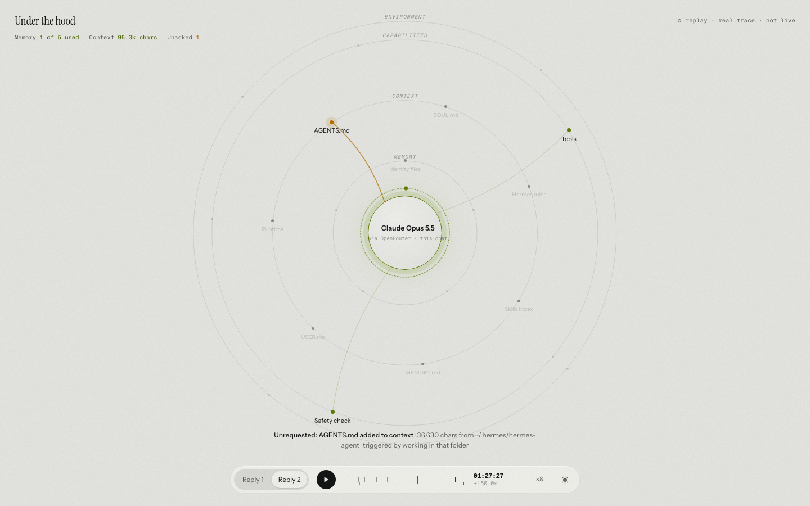
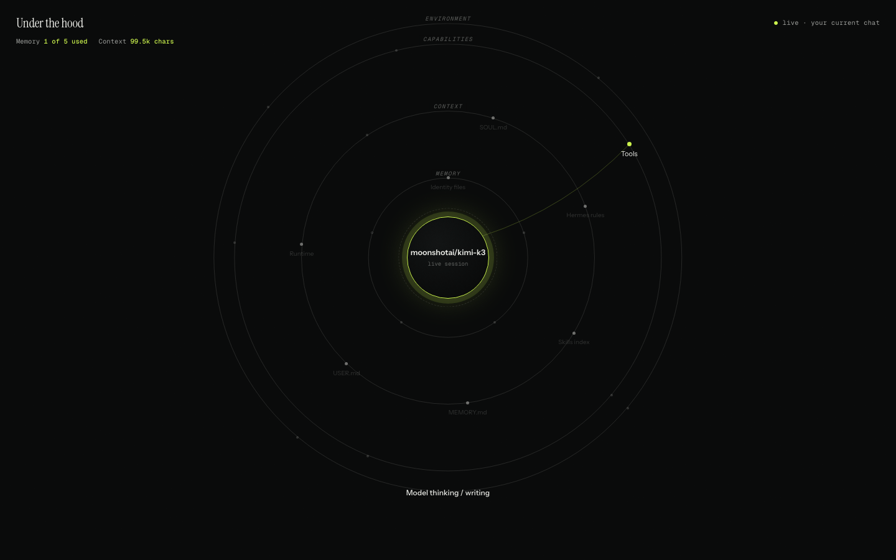

Working prototype · AI Labs
Under the hood.
A live view of what my AI actually uses: the model, the memory, the tools, the helpers. What it uses lights up. What it ignores stays dark.
The work
My setup has one model, five kinds of memory, over a hundred skills, a full set of tools, and a few helpers that run quietly in the background. When it answers me, some of that machinery is working and most of it isn't. This project makes the difference visible, live. You watch a reply travel through the system: what gets read, what gets called, what gets ignored, and what quietly costs money after the answer is already on screen.
Why it needs to exist
People are being handed agents they can't see into. Every reply is a small black box of reads, lookups and side-calls, and the chat window is the whole interface. Trust, cost and control all depend on seeing the machinery. Right now almost nobody can.
I learned this the expensive way: one working session of building these prototypes cost about ten dollars in model fees, and the only reason I know why is that I went digging through my own logs. Most people can't do that. They shouldn't have to.
Why I'm serious about it
Agents are moving from novelty to infrastructure. When something becomes infrastructure, someone builds the dashboard for it. That happened with servers, with databases, with cloud spend. It will happen with agents, and the people who need it first are the ones already running real setups.
I run one daily. These aren't mockups of an idea. They're replays and live views of my own system, real traces included: which of my five memory systems a reply actually used (usually one), and the 36,000-character file that got loaded without anyone asking for it.


